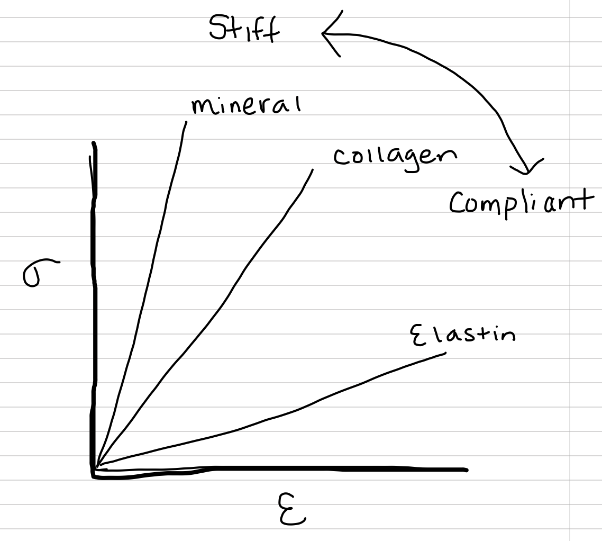

2.3 Stress in a material is the resistance to strain
When a force is applied to an object, the object deforms (often so little that we cannot see the deformation!). How an object deforms is really critical to its function in an organism. In order to understand how material properties determine why some objects are very resistant to deformation while others easily deform, or why some objects are resistant to fracture while others are easily fractured, or why some structures increase the efficiency of cyclical motions while others don’t, we need to separate the effects of the geometry (in general size but sometimes shape too) of the object from the material of the object. The size of the object is standardized by dividing by the force (\(F\)) by the cross-sectional area (\(A\)) of the object that is loaded and dividing the change-in-length (\(\Delta L\), the deformation) by the starting length (\(L_o\)). This results in two really fundamental parameters:
- strain is the standardized deformation, \(\epsilon = \frac{\Delta L}{L_o}\). There are no units, that is, \(\epsilon\) is dimensionless
- stress is the standardized force resisting deformation, \(\sigma = \frac{F}{A}\) and has SI units of \(\textrm{N} \cdot \textrm{m}^{-2}\), which are the units of pressure.
 Figure 2.6: A somewhat idealistic stress-strain curve
Figure 2.6: A somewhat idealistic stress-strain curve
Stress is not the pressure applied to the structure but the area-standardized reaction force of the material in response to the external load. Stress is the reaction to strain. Or, stress is the intrinsic resistance to strain. Deformation (strain) causes a rearrangement of the atoms in a material. The rearranged atoms are attracting/repelling each other in a way that will return the material toward its starting length if the external load is removed. Stress is this internal, standardized force due to the atoms attracting/repelling each other. If the external load is removed from a deformed material, there is still stress, and this stress is present until the added attraction/repulsion force returns to their starting value. So while an external load causes strain, strain causes stress! Importantly, all of the loading environments described above can be applied to stress as well, so that we use the phrase “tensile stress”.
 Figure 2.7: Relative stress-strain curves for hydroxyapatite, collagen, and elastin
This ability of a material to resist deformation is graphically shown by the slope of a stress-strain curve, with stress (\(\sigma\)) on the y-axis and strain \(\epsilon\) on the x-axis. This slope is called the Elastic (or Young’s) Modulus (\(E\)), or stiffness. Since the curve starts at the origin (0, 0), the elastic modulus is
\[E = \frac{\sigma}{\epsilon}\]
Materials with high \(E\) (steeper slopes) are stiff, materials with low \(E\) (shallower slopes) are compliant. Mineralized tissue is stiff relative to a tissue with abundant collagen which is stiff relative to a tissue with abundant elastin (we can’t really test individual proteins). Rubber in a rubber band is more compliant than nylon used for rope.